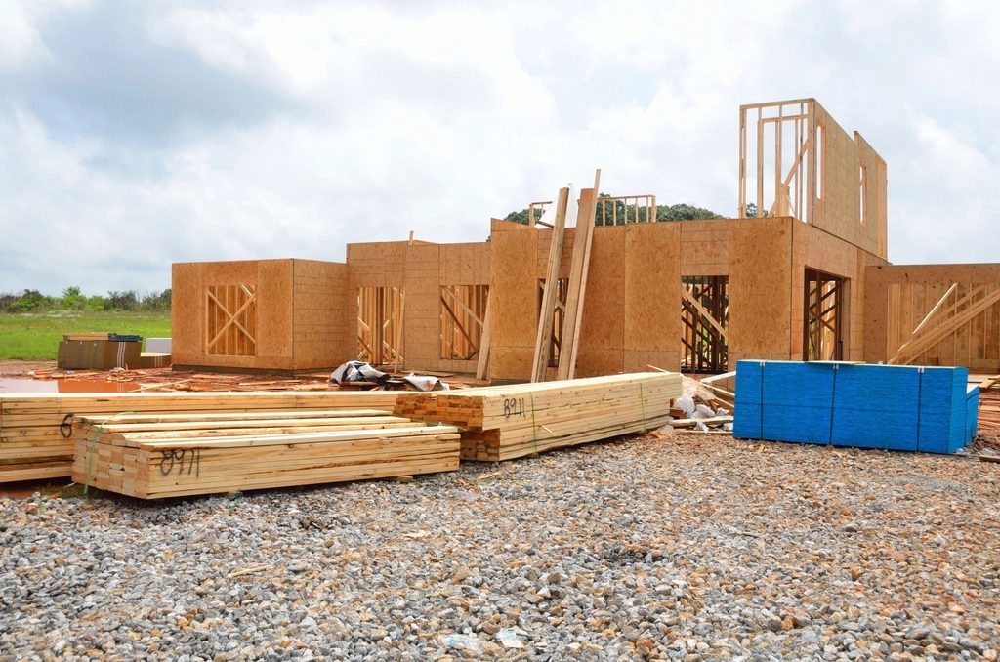

01 · Where you build
Your projects, on the map buyers search by.
People look for builders by area: "new homes in Prosper", "custom builder Frisco". Each project shows its city, so the site works for every area you build in. Tap a pin or a project.
02 · Follow the build
Every stage, documented.
Site photos


03 · Why it works for a Texas builder
Proof buyers can see.
Projects, your story, and a clear way to reach you.
Exactly what you asked for, built so buyers can see the quality that goes into every home. Happy to walk you through it on a call.